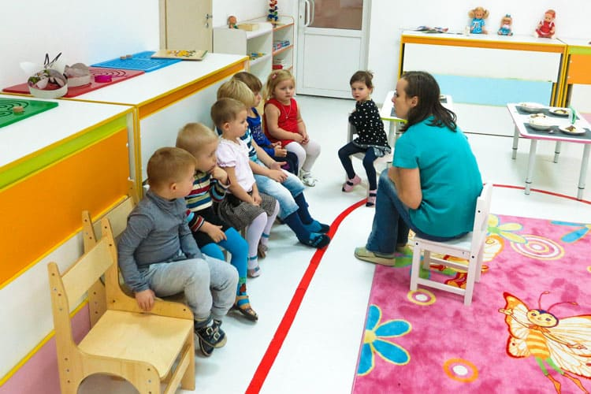
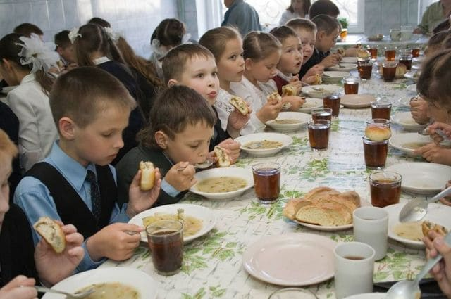
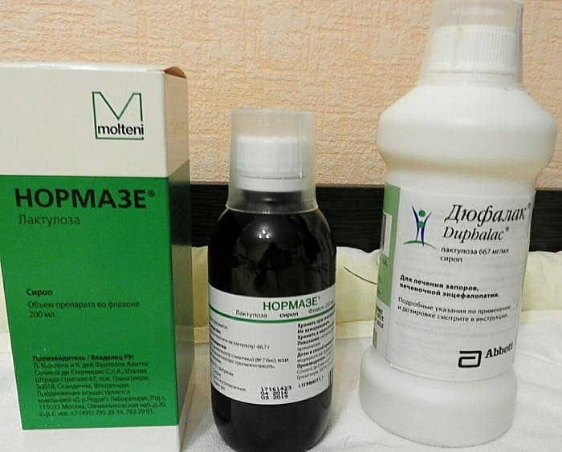
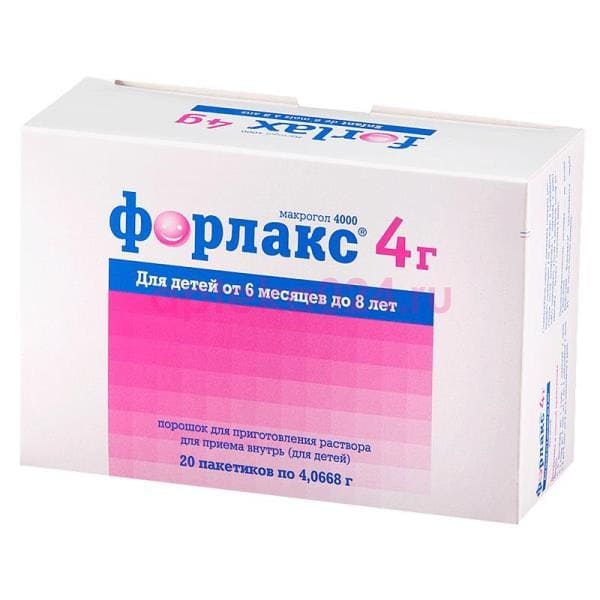
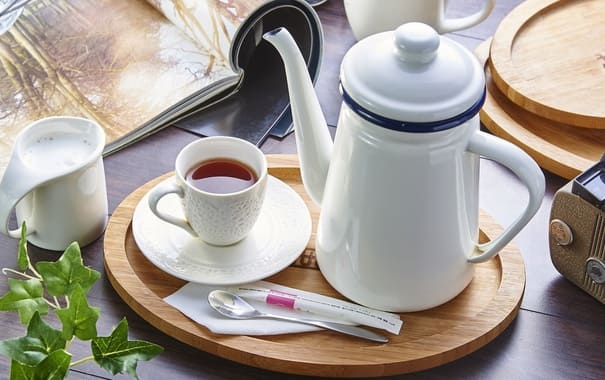
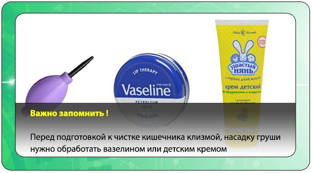
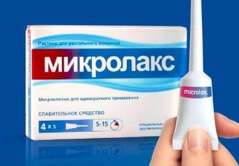
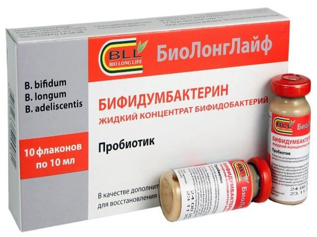

Запор – это нарушение функций кишечника, приводящее к затруднениям отхождения каловых масс: чрезмерно плотному калу, болезненной дефекации, крови в стуле, задержке стула более нескольких дней, недержанию стула и др.
На сентябрь, кажется, приходится годовой пик заболеваемости детскими запорами. Семьи приходят к педиатру изначально с болями в животе и/или запорами, или с прививками и заодно обсудить запоры, или с болезнями и заодно поговорить о запорах, или с другими детьми и заодно «а у старшего моего что-то запоры, посмотрите и его, пожалуйста» и т. д.
В большинстве случаев ключевым фактором в возникновении детского запора является БОЛЬ при дефекации. Чем дольше каловый комок стоит в прямой кишке, тем сильнее всасывается вода, тем толще и плотнее становятся каловые массы.
Рано или поздно эти толстые и жесткие каловые массы, проходя через анус, надорвут его слизистую – возникнет трещина ануса, ребенок испытает острую боль, может вытечь капля крови, видимая на стуле или на туалетной бумаге.
Почему именно сентябрь?
В этом месяце дети массово выходят в школы и детские сады, где созданы все условия для провоцирования и усугубления детских запоров:

1) Там неудобно какать.
В школьном туалете не запирается кабинка, забегают в туалет всякие сорванцы, нет стульчака на унитазе, нет туалетной бумаги, стыдно попроситься в середине урока – ребята будут смеяться, а то и попросишься, а учитель не пустит, подумает что ты врушка. В саду и вовсе все на виду, нет условий уединиться и сосредоточиться. И дети решают «перетерпеть», подождать до дома, а дома уже не хочется.
2) Там другая еда.
Характер, график питания детей после летних каникул резко меняется, это не может не отражаться на работе кишечника.

3) Там стресс.
Адаптация к детскому саду, привыкание к школьным нагрузкам, нелюбимый задира-ученик и т. д.
4) Там обезвоживание.
Жарко, много бега, нет воды под рукой. А еще воспитатели иногда специально пореже поят, «чтобы не обмочились в дневной сон». И так далее.
Здесь стартует порочный круг. Как только ребенок почувствовал боль при дефекации, он начинает удерживать стул сознательно, боясь горшка/унитаза, боясь боли. Чем дольше ребенок сможет препятствовать дефекации, тем толще и плотнее станет каловый комок. Чем толще и плотнее каловый комок, тем сильнее он травмирует анус при следующей дефекации и тем сильнее будет боль, которую он снова испытает. И далее по кругу.
Когда плотные каловые массы стоят в прямой кишке неделями и месяцами, они растягивают ее до внушительных размеров. Они могут даже растягивать анус, не давая ему смыкаться полностью, и тогда свежие порции полужидкого кала будут обтекать каловые камни и вытекать наружу, возникнет недержание кала (каломазание, энкопрез).
Нужна ли клизма?
Да, с нее следует начинать лечение. Вылечит ли она от запоров? Полностью – нет, не вылечит. Клизма – это сиюминутная разовая помощь, не более того. Опорожнив кишечник, мы сделаем ребенку благо, но кишка перерастянута месяцами запоров, она не почувствует нормальную степень наполнения вовремя, и ребенок ощутит позыв к следующей дефекации только через несколько дней, когда снова разовьется каловый завал.
Иногда родители догадываются обратиться к педиатру лишь на стадии каломазания, а то, что ребенок ходит в туалет раз в неделю с сильными болями и неправдоподобно большим объемом, считают вариантом нормы, мелкой неприятностью или его индивидуальной особенностью. Однако обращаться к врачу надо сразу, как только заметили, что ребенок стал бояться туалета, стал врать, что не хочет какать и скрещивать ножки, пытаясь удержать кал в себе, подавить позыв к дефекации. Чем раньше начато лечение, тем быстрее и стабильнее эффект от него.
Существует упорный миф о том, что слабительные вызывают «привыкание». Его корни очень понятны: если слабительное давать неверно, не подбирая дозу, скажем Дюфалак 5 мл в день один месяц, то от него стул будет чуть получше, но стоит его отменить, и все симптомы возвращаются с прежней силой.
Но это вовсе не от того, что развилось «привыкание» к препарату, это от того, что курс был неэффективным и кишка совершенно не успела восстановить тонус, трещины не зажили, ребенок не отвык от того, что какать больно и т. д.
Что же поможет в долгосрочной перспективе? Только слабительные. Такому ребенку нужен длительный (2–4 месяца) курс слабительных препаратов, цель которого на все время лечения сделать кал мягким. Для чего – скажем чуть позже.
Как давать слабительные? Если бы можно было четко высчитать эффективную дозу заранее и назвать ее родителям…. Но у каждого ребенка своя доза, поэтому слабительные вводятся в 4 фазы.
Фаза 1 – увеличение дозы.
Ребенок принимает лактулозу (Дюфалак, Нормазе)

или макрогол (Форлакс) в нарастающей дозе день ото дня,

пока не добьемся легкой диареи (5-6-й тип по Бристольской шкале кала). То есть в первый день дается 5 мл дюфалака, завтра – 7, послезавтра – 10 и т. д., пока не получим эффект.
Затем начинается собственно лечение – фаза 2.
Ребенок принимает несколько месяцев подряд слабительный препарат, поддерживая мягкий стул – легкий понос, если хотите. Почему так долго? За это время прямая кишка, которую больше не растягивают плотным калом, приходит обратно в тонус, за это время заживают трещины ануса, за это время ребенок отвыкает от ассоциации дефекация = боль, и за это время мы приучаем ребенка к режиму дефекаций: каждый раз после завтрака или после ужина (то есть то время, когда он точно дома, когда ему комфортно и когда вы можете контролировать ситуацию). Не забывайте, что это осмотические слабительные, и эффективно работать они могут только в присутствии достаточного количества жидкости.
Поэтому Дюфалак или Форлакс даются утром и запиваются обильно (1 стакан и более) жидкостью – чаем, молоком и т. д.

Затем так же плавно снижаем дозу, как и прибавляли, – это фаза 3. Отменяем и пробуем жить без слабительного, даем кишечнику начать работать самому – это фаза 4.
Фиксированной недостаточной дозой слабительного мы не лечим, мы лишь отодвигаем неизбежную проблему.
Однако при правильном применении эффективность и безопасность осмотических слабительных весьма высоки.
Разумеется, помимо слабительных, следует пробовать корректировать стул диетой: давать ребенку побольше воды (литр в сутки и более). Вводить побольше растительной клетчатки (салаты, овощные рагу), соков (слива, чернослив), кисломолочных продуктов (йогурты), слабящих продуктов (свекла, соленые огурцы) и т. д. Но все это проще сказать, чем сделать: как правило, дети с запорами – малоежки и избирательноежки, сидят на макаронах с сосисками, таскают сладости и от всего остального воротят нос.
Помимо слабительных и коррекции диеты, следует пытаться вовлечь самого ребенка в лечение, сделать из этого занимательную игру, замотивировать на результат. Например, купить календарь с крупными клетками и рисовать в клеточке смайлик в каждый день, когда сам сходил в туалет. Пять дней самостоятельного стула подряд – заслужил гарантированную игрушку, две недели подряд – суперприз. Положительное подкрепление творит чудеса, поверьте.
Ну и физические нагрузки, конечно. Дошкольников дополнительно стимулировать не нужно, разве что ограничить время за гаджетами и телевизором, а вот школьников уже нужно активно понуждать – записать в коллективную спортивную секцию, например.
Когда делать очистительную клизму?
Обязательно перед началом курса слабительных. Если сверху откроем «водопад», а снизу стоит каловый завал – получим сильные боли в животе от растяжения кишок. Кроме того, клизма нужна, если ребенок более трех суток не имел дефекации, если дефекация неэффективна (сидит на унитазе полчаса, какашка «стоит на выходе», но никак не выдавливается). Если дефекация вызывает боль и/или кровотечение из ануса. Ну и при ряде других причин, которые определяет врач.
Как сделать очистительную клизму?
В этом нет ничего сложного и страшного. Нужно взять спринцовку на 300–400 мл (а не носовую грушу на 50 мл!), заполнить ее изотоническим (физиологическим) раствором (0,9 %-ный раствор натрия хлорида), а лучше гипертоническим раствором
(2–5%-ный натрия хлорида) комнатной температуры, смазать наконечник и анус жирным детским кремом, уложить ребенка на левый бок, привести ноги к животу, и нежным вкручивающим движением по направлению к пупку ввести наконечник на 4–5 см, затем зажать ягодицы одной рукой, а второй сжимать постепенно спринцовку, и ввести потихоньку в прямую кишку все ее содержимое. Затем плавно извлечь наконечник, подержать ягодицы сомкнутыми 2-10 минут и посадить на горшок/унитаз для дефекации. При необходимости – повторить второй раз. Смысл клизмы – размочить плотный кал, сделать его мягким и облегчить опорожнение кишки.

Пара слов про запоры у самих родителей
Очень хочется напомнить, что у врача не бывает «неудобных» или постыдных тем для беседы. Спрашивать о запорах не стыдно, об анальном сексе не стыдно, о геморрое не стыдно – ни о чем не стыдно!
Врач не моралист, он не для нравственных оценок сидит в кабинете, его главная функция – улучшать качество вашей жизни. Очень грустно, что мамы заботятся о детях и совсем забывают о себе. Каждая третья мама ребенка с запорами, робея и краснея, спрашивает «между делом» у меня: мол, эффективна ли такая схема для взрослых, или там есть нюансы. «А то у меня после родов тоже, знаете ли… но я никуда не хожу… все жду, может как-нибудь само пройдет…»
Нюансы у взрослых запоров, конечно, есть: там больше выбор слабительных (дополнительно разрешены некоторые стимулирующие слабительные, запрещенные у детей), чаще сопутствует геморрой, нередко запоры усугубляются травматизацией сфинктера неумелым анальным сексом и т. д. Но, в общем и целом, да, принципы терапии те же самые.
Не забывайте заботиться о собственном здоровье, не тяните с обращением к терапевту и/или гастроэнтерологу с запорами.
Пожалуйста, не путайте очистительную клизму и Микролакс. Микролакс – это местное слабительное, и оно на порядок менее эффективно, чем клизма. Но и его иногда можно применять, например, когда на слабительных вдруг пропал стул на 2–3 дня и надо его немного «подтолкнуть».

…Итак, если ваш ребенок ходит «по-большому» редко (раз в 2–3 дня), плотно (3-4-й тип по Бристольской шкале), но без боли, крови и каломазания – пробуйте исправить ситуацию диетой, режимом и физическими нагрузками. Но как только вы заметили, что ребенок начал бояться дефекации, сразу идите к педиатру. Все вышесказанное не должно являться поводом к самолечению. Это лишь обзорная беседа об основных принципах терапии запоров у детей.
Помимо этого, ваш врач может назначить дополнительные препараты. Однако основой основ лечения запора является ПРАВИЛЬНОЕ назначение слабительных, а практика показывает, что родители, которые понимают смысл схемы лечения, гораздо тщательнее и правильнее ее соблюдают, чем те, которые просто получили сухие рекомендации.
Р. S. Пробиотики, пребиотики, желчегонные, противоглистные препараты и физиотерапия если и имеют отношение к лечению запоров, то косвенное. Это вовсе не основа терапии. Если врач собрался лечить недельные запоры с кровью одним Бифидумбактерином,

то следует получить мнение другого специалиста.
(Сергей Бутрий "Здоровье ребенка: современный подход")